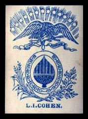
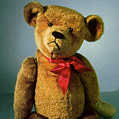

Welcome To The Jewish Play Project
Our goal is to promote understanding of the role of Jewish designers, entrepreneurs and inventors in the past, present and future of the play industries.
In pursuit of this mission we wish to support enquiry into the history of these “players” within the play industries and the larger questions around the role of Jewish culture and/or practice in the lives of those who made that history.
Featured Entry

Lewis I. Cohen
Company: L.I. Cohen, New York
Toy: Playing Cards
Cohen was born in the US and in 1814 was apprenticed to a half-brother's pencil
business in the UK. Afterwards he returned the US to start his own business as the
country's first lead pencil manufacturer and the first stationer to sell steel pens
instead of quills. He added playing cards to his inventory in 1932. In 1935 he patented
and used a single pass, four-color press for playing cards. Those cards became his
exclusive line of business and made his company the leading producer of playing cards.
Featured Categories
